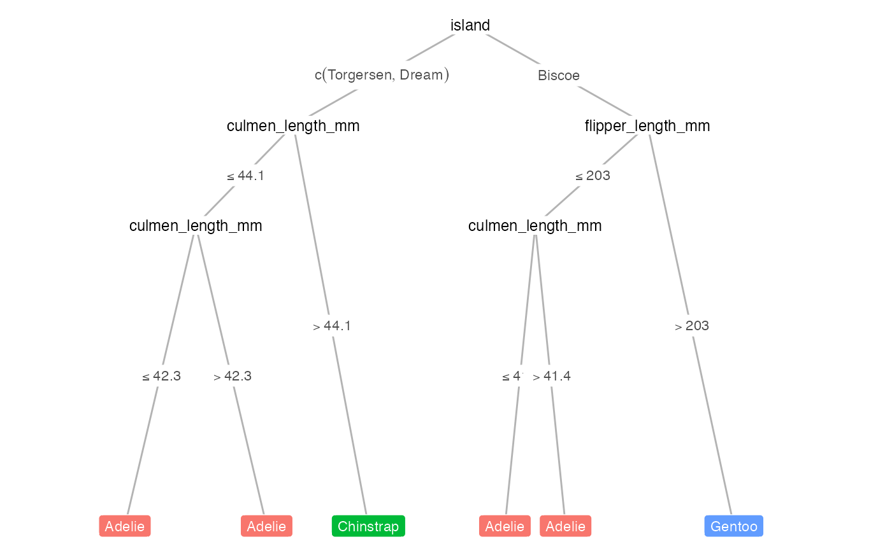

Draws the conditional decision tree output from partykit::ctree(), utilizing ggparty geoms: geom_edge, geom_edge_label, geom_node_label.
draw_tree(
dat,
fit,
term_dat,
layout,
target_cols = NULL,
title = NULL,
tree_space_top = 0.05,
tree_space_bottom = 0.05,
print_eval = FALSE,
metrics = NULL,
x_eval = 0,
y_eval = 0.9,
task = c("classification", "regression"),
par_node_vars = list(label.size = 0, label.padding = unit(0.15, "lines"), line_list =
list(aes(label = splitvar)), line_gpar = list(list(size = 9)), ids = "inner"),
terminal_vars = list(label.padding = unit(0.25, "lines"), size = 3, col = "white"),
edge_vars = list(color = "grey70", size = 0.5),
edge_text_vars = list(color = "grey30", size = 3, mapping = aes(label =
paste(breaks_label, "*NA")))
)Dataframe with samples from original dataset ordered according to the clustering within each leaf node.
party object, e.g., as output from partykit::ctree()
Dataframe for terminal nodes, must include these columns: id, x, y and y_hat.
Dataframe of layout of all nodes, must include these columns: id, x, y and y_hat.
Character vectors representing the hex values of different level colors for targets, defaults to viridis option B.
Character string for plot title.
Numeric value to pass to expand for top margin of tree.
Numeric value to pass to expand for bottom margin of tree.
Logical. If TRUE, print evaluation of the tree performance.
A set of metric functions to evaluate decision tree, defaults to common metrics for classification/regression problems. Can be defined with `yardstick::metric_set`.
Numeric value indicating x position to print performance statistics.
Numeric value indicating y position to print performance statistics.
Character string indicating the type of problem, either 'classification' (categorical outcome) or 'regression' (continuous outcome).
Named list containing arguments to be passed to the `geom_node_label()` call for non-terminal nodes.
Named list containing arguments to be passed to the `geom_node_label()` call for terminal nodes.
Named list containing arguments to be passed to the `geom_edge()` call for tree edges.
Named list containing arguments to be passed to the `geom_edge_label()` call for tree edge annotations.
A ggplot2 grob object of the decision tree.
x <- compute_tree(penguins, target_lab = 'species')
draw_tree(x$dat, x$fit, x$term_dat, x$layout)
#> Warning: Using `size` aesthetic for lines was deprecated in ggplot2 3.4.0.
#> ℹ Please use `linewidth` instead.
#> ℹ The deprecated feature was likely used in the treeheatr package.
#> Please report the issue at <https://github.com/trangdata/treeheatr/issues>.
#> Warning: Ignoring unknown parameters: `label.size`
